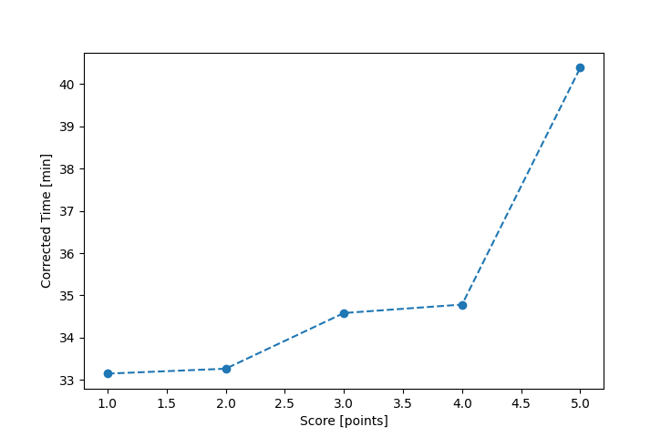

| Wind: | ? (BFT) |
|---|---|
| RC: | Nick_H , Ryan_C |
| Date: | June 23, 2024 |
| Notes: | M1 |
| Rank / Score | Name | Boat | Input Time [mm:ss] | Input Offset [mm:ss] | Race Time [mm:ss] | Race Time [s] | Handicap | Corrected Time [s] | Corrected Time [mm:ss] |
|---|---|---|---|---|---|---|---|---|---|
| 1.0 | David_Bu | SF | 30:57 | 00:00 | 30:57 | 1857 | 1.03000 | 1803 | 30:03 |
| 2.0 | Bill_P | SF | 31:03 | 00:00 | 31:03 | 1863 | 1.03000 | 1809 | 30:09 |
| 3.0 | Tyler_T | SF | 32:26 | 00:00 | 32:26 | 1946 | 1.03000 | 1889 | 31:29 |
| 4.0 | Nick_Ally | SF | 33:52 | 00:00 | 33:52 | 2032 | 1.03000 | 1973 | 32:53 |
| 5.0 | Matt_L | F5 | 32:21 | 00:00 | 32:21 | 1941 | 0.98100 | 1979 | 32:59 |
| 6.0 | Heather_B | SF | 35:38 | 00:00 | 35:38 | 2138 | 1.03000 | 2076 | 34:36 |

Application Notes:
All race results are unofficial
View source code at https://github.com/cessnao3/portsmouthracecalc/